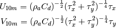

2.8.4. vacumm.diag.atmos – Atmospheric diagnostics¶
2.8.4.1. Overview¶
| Functions: |
|---|
2.8.4.2. Content¶
-
wind_stress(u, v, rhoa=1.25, cd=0.016, format_axes=False, alongxy=None)[source]¶ Compute the sea surface zonal and meridional wind stress from 10m wind components
Output variables are formatted using
format_var().Formula: 
Params: - u/v: Wind at 10m above sea surface.
- rhoa, optional: Air density (in kg.m-3).
- cd, optional: Drag coefficient.
- format_axes, optional: Also format axes using
format_axis(). - alongxy, optional: Format variables considering components are along X/Y direction and not along zonal/meridional direction.
Return: us, vs
-
ws2w(us, vs, rhoa=1.25, cd=0.016, format_axes=False, alongxy=None)[source]¶ Convert from wind stress to 10m wind components
This function is the reverse one of
wind_stress(). Output variables are formatted usingformat_var().Formula: 
Params: - us/vs: Wind stress components.
- rhoa, optional: Air density (in kg.m-3).
- cd, optional: Drag coefficient.
- format_axes, optional: Also format axes using
format_axis(). - alongxy, optional: Format variables considering components are along X/Y direction and not along zonal/meridional direction.
Return: u, v